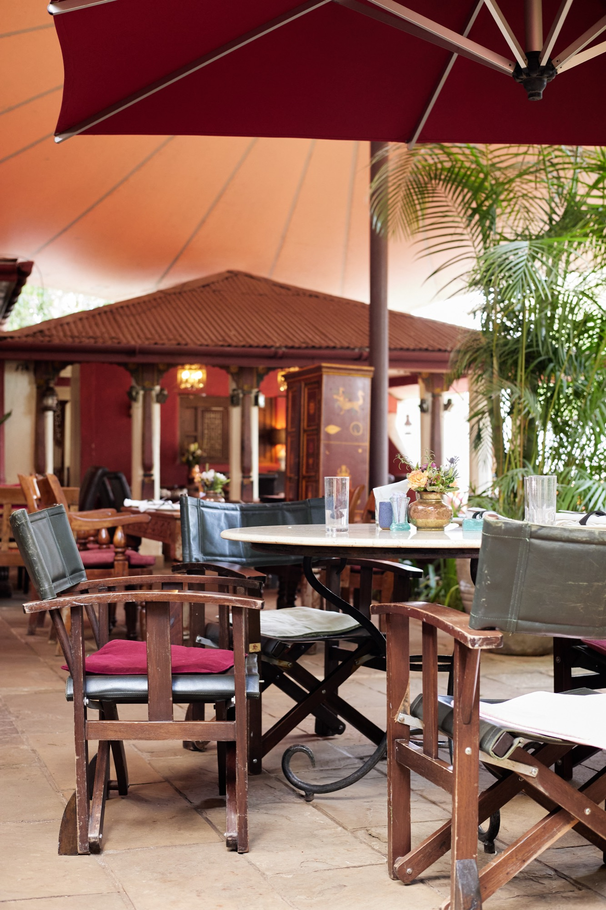

Our Food
The farm decides.
The kitchen answers.
Harvested at 05:30, on the plate by lunch. What follows changes with the rains — and we think that is the best thing about it.
In short
A kitchen that cooks
the long way round.
Most of what you eat here was growing a few hours ago. The salmon is smoked in our own smokehouse over one slow fire. The bread is baked in the morning. Everything else we buy from people we know by name — and nothing on the plate travels very far to reach it.
The full menus live below — main dishes, beverages, and the bar — and you can read every one of them here, without leaving the page.


Chapter I
Our Farmers
We grow a great deal of what we serve, but not all of it — and the rest comes from smallholders around Karen, Limuru and the Rift who have been supplying this kitchen for years.
We buy whole crops rather than cherry-picking, we pay on delivery, and we plant around what they tell us grows well. It means the menu bends to the season instead of the other way round — and it means the people who grow your food are not strangers to us.
Chapter II
Sourced, then
slowly prepared.
Our salmon arrives whole and is cured and smoked here, in our own smokehouse, over one fire kept deliberately low. It takes as long as it takes — usually most of a day.
The same patience runs through the rest of it. Stocks reduced overnight, lamb held eight hours over the coals, bread proved slowly and baked at dawn. Nothing here is rushed, because the things worth eating rarely can be.
- One fire Kept deliberately low
- Eight hours Lamb over the coals


Chapter III
By the time it
reaches your table.

A single plate here has passed through a great many careful hands — picked, sorted, trimmed, cured, smoked, roasted, rested, tasted and tasted again.
None of that is visible when it arrives, and it shouldn’t be. What you should notice is simply that it tastes like someone meant it. That is the whole ambition: food made unhurriedly, by people who cook the way they would at home, for a table they care about.


And then, the garden
Eat it where
it grew.
Every one of these dishes is best eaten outside, under the trees, with the afternoon going long. Take a table on the lawn, let the children loose in the garden, and stay as late as you like — nobody here will hurry you.